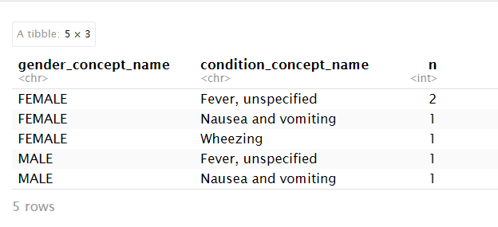

Content from What is OMOP?
Last updated on 2025-07-08 | Edit this page
Estimated time: 0 minutes
Overview
Questions
- What is OMOP?
- What information would you expect to find in the person table?
- What information would you expect to find in the condition_occurrence table?
- How can you join these tables to aggregate information?
Objectives
- Examine the diagram of the OMOP tables and the data specification
- Interrogate the data in the person table
Setting up R
Getting started
Since we want to import the files called *.csv into our
R environment, we need to be able to tell our computer where the file
is. To do this, we will create a “Project” with RStudio that contains
the data we want to work with. The “Projects” interface in RStudio not
only creates a working directory for you, but also remembers its
location (allowing you to quickly navigate to it). The interface also
(optionally) preserves custom settings and open files to make it easier
to resume work after a break.
Install the required packages
You will need the tidyverse package from CRAN (the
official package repository). You will also need a package we have
developed omopcept.
R
install.packages("tidyverse")
OUTPUT
# Downloading packages -------------------------------------------------------
- Downloading tidyverse from https://packagemanager.posit.co/cran/__linux__/jammy/latest ... OK [415.9 Kb in 0.3s]
- Downloading broom from https://packagemanager.posit.co/cran/__linux__/jammy/latest ... OK [1.8 Mb in 0.27s]
- Downloading conflicted from https://packagemanager.posit.co/cran/__linux__/jammy/latest ... OK [53.8 Kb in 0.2s]
- Downloading dtplyr from https://packagemanager.posit.co/cran/__linux__/jammy/latest ... OK [349.5 Kb in 0.3s]
- Downloading data.table from https://packagemanager.posit.co/cran/__linux__/jammy/latest ... OK [2.6 Mb in 0.24s]
- Downloading forcats from https://packagemanager.posit.co/cran/__linux__/jammy/latest ... OK [411.7 Kb in 0.33s]
- Downloading ggplot2 from https://packagemanager.posit.co/cran/__linux__/jammy/latest ... OK [4.8 Mb in 0.28s]
- Downloading gtable from https://packagemanager.posit.co/cran/__linux__/jammy/latest ... OK [217.4 Kb in 0.26s]
- Downloading isoband from https://packagemanager.posit.co/cran/__linux__/jammy/latest ... OK [1.6 Mb in 0.15s]
- Downloading scales from https://packagemanager.posit.co/cran/__linux__/jammy/latest ... OK [822 Kb in 0.22s]
- Downloading farver from https://packagemanager.posit.co/cran/__linux__/jammy/latest ... OK [1.4 Mb in 0.18s]
- Downloading labeling from https://packagemanager.posit.co/cran/__linux__/jammy/latest ... OK [59.5 Kb in 0.23s]
- Downloading RColorBrewer from https://packagemanager.posit.co/cran/__linux__/jammy/latest ... OK [50.8 Kb in 0.31s]
- Downloading viridisLite from https://packagemanager.posit.co/cran/__linux__/jammy/latest ... OK [1.2 Mb in 0.22s]
- Downloading googledrive from https://packagemanager.posit.co/cran/__linux__/jammy/latest ... OK [1.8 Mb in 0.48s]
- Downloading gargle from https://packagemanager.posit.co/cran/__linux__/jammy/latest ... OK [757.5 Kb in 0.15s]
- Downloading httr from https://packagemanager.posit.co/cran/__linux__/jammy/latest ... OK [475.7 Kb in 0.2s]
- Downloading curl from https://packagemanager.posit.co/cran/__linux__/jammy/latest ... OK [770.7 Kb in 0.21s]
- Downloading openssl from https://packagemanager.posit.co/cran/__linux__/jammy/latest ... OK [1.3 Mb in 0.19s]
- Downloading askpass from https://packagemanager.posit.co/cran/__linux__/jammy/latest ... OK [21.5 Kb in 0.21s]
- Downloading sys from https://packagemanager.posit.co/cran/__linux__/jammy/latest ... OK [39.9 Kb in 0.18s]
- Downloading uuid from https://packagemanager.posit.co/cran/__linux__/jammy/latest ... OK [47.7 Kb in 0.24s]
- Downloading googlesheets4 from https://packagemanager.posit.co/cran/__linux__/jammy/latest ... OK [504.9 Kb in 0.16s]
- Downloading cellranger from https://packagemanager.posit.co/cran/__linux__/jammy/latest ... OK [101.5 Kb in 0.23s]
- Downloading rematch from https://packagemanager.posit.co/cran/__linux__/jammy/latest ... OK [15.9 Kb in 0.14s]
- Downloading ids from https://packagemanager.posit.co/cran/__linux__/jammy/latest ... OK [119.8 Kb in 0.15s]
- Downloading rematch2 from https://packagemanager.posit.co/cran/__linux__/jammy/latest ... OK [45 Kb in 0.24s]
- Downloading haven from https://packagemanager.posit.co/cran/__linux__/jammy/latest ... OK [378.6 Kb in 0.16s]
- Downloading lubridate from https://packagemanager.posit.co/cran/__linux__/jammy/latest ... OK [969.9 Kb in 0.23s]
- Downloading timechange from https://packagemanager.posit.co/cran/__linux__/jammy/latest ... OK [166.5 Kb in 0.17s]
- Downloading modelr from https://packagemanager.posit.co/cran/__linux__/jammy/latest ... OK [196.1 Kb in 0.16s]
- Downloading ragg from https://packagemanager.posit.co/cran/__linux__/jammy/latest ... OK [646.1 Kb in 0.16s]
- Downloading systemfonts from https://packagemanager.posit.co/cran/__linux__/jammy/latest ... OK [334.9 Kb in 0.17s]
- Downloading textshaping from https://packagemanager.posit.co/cran/__linux__/jammy/latest ... OK [179.4 Kb in 0.22s]
- Downloading readxl from https://packagemanager.posit.co/cran/__linux__/jammy/latest ... OK [398.9 Kb in 0.16s]
- Downloading reprex from https://packagemanager.posit.co/cran/__linux__/jammy/latest ... OK [483.4 Kb in 0.29s]
- Downloading callr from https://packagemanager.posit.co/cran/__linux__/jammy/latest ... OK [438.9 Kb in 0.16s]
- Downloading processx from https://packagemanager.posit.co/cran/__linux__/jammy/latest ... OK [329.4 Kb in 0.16s]
- Downloading ps from https://packagemanager.posit.co/cran/__linux__/jammy/latest ... OK [488.8 Kb in 0.18s]
- Downloading rstudioapi from https://packagemanager.posit.co/cran/__linux__/jammy/latest ... OK [310.4 Kb in 0.15s]
- Downloading rvest from https://packagemanager.posit.co/cran/__linux__/jammy/latest ... OK [293.1 Kb in 0.16s]
- Downloading selectr from https://packagemanager.posit.co/cran/__linux__/jammy/latest ... OK [491.3 Kb in 0.16s]
- Downloading xml2 from https://packagemanager.posit.co/cran/__linux__/jammy/latest ... OK [275.2 Kb in 0.14s]
Successfully downloaded 43 packages in 17 seconds.
The following package(s) will be installed:
- askpass [1.2.1]
- broom [1.0.8]
- callr [3.7.6]
- cellranger [1.1.0]
- conflicted [1.2.0]
- curl [6.4.0]
- data.table [1.17.6]
- dtplyr [1.3.1]
- farver [2.1.2]
- forcats [1.0.0]
- gargle [1.5.2]
- ggplot2 [3.5.2]
- googledrive [2.1.1]
- googlesheets4 [1.1.1]
- gtable [0.3.6]
- haven [2.5.5]
- httr [1.4.7]
- ids [1.0.1]
- isoband [0.2.7]
- labeling [0.4.3]
- lubridate [1.9.4]
- modelr [0.1.11]
- openssl [2.3.3]
- processx [3.8.6]
- ps [1.9.1]
- ragg [1.4.0]
- RColorBrewer [1.1-3]
- readxl [1.4.5]
- rematch [2.0.0]
- rematch2 [2.1.2]
- reprex [2.1.1]
- rstudioapi [0.17.1]
- rvest [1.0.4]
- scales [1.4.0]
- selectr [0.4-2]
- sys [3.4.3]
- systemfonts [1.2.3]
- textshaping [1.0.1]
- tidyverse [2.0.0]
- timechange [0.3.0]
- uuid [1.2-1]
- viridisLite [0.4.2]
- xml2 [1.3.8]
These packages will be installed into "~/work/omop-carpentries/omop-carpentries/renv/profiles/lesson-requirements/renv/library/linux-ubuntu-jammy/R-4.5/x86_64-pc-linux-gnu".
The following required system packages are not installed:
- pandoc [required by reprex]
The R packages depending on these system packages may fail to install.
An administrator can install these packages with:
- sudo apt install pandoc
# Installing packages --------------------------------------------------------
- Installing broom ... OK [installed binary and cached in 0.53s]
- Installing conflicted ... OK [installed binary and cached in 0.26s]
- Installing data.table ... OK [installed binary and cached in 0.28s]
- Installing dtplyr ... OK [installed binary and cached in 0.55s]
- Installing forcats ... OK [installed binary and cached in 0.29s]
- Installing gtable ... OK [installed binary and cached in 0.41s]
- Installing isoband ... OK [installed binary and cached in 0.2s]
- Installing farver ... OK [installed binary and cached in 0.19s]
- Installing labeling ... OK [installed binary and cached in 0.16s]
- Installing RColorBrewer ... OK [installed binary and cached in 0.16s]
- Installing viridisLite ... OK [installed binary and cached in 0.17s]
- Installing scales ... OK [installed binary and cached in 0.39s]
- Installing ggplot2 ... OK [installed binary and cached in 0.75s]
- Installing curl ... OK [installed binary and cached in 0.19s]
- Installing sys ... OK [installed binary and cached in 0.16s]
- Installing askpass ... OK [installed binary and cached in 0.16s]
- Installing openssl ... OK [installed binary and cached in 0.21s]
- Installing httr ... OK [installed binary and cached in 0.17s]
- Installing gargle ... OK [installed binary and cached in 0.33s]
- Installing uuid ... OK [installed binary and cached in 0.16s]
- Installing googledrive ... OK [installed binary and cached in 0.59s]
- Installing rematch ... OK [installed binary and cached in 0.16s]
- Installing cellranger ... OK [installed binary and cached in 0.16s]
- Installing ids ... OK [installed binary and cached in 0.16s]
- Installing rematch2 ... OK [installed binary and cached in 0.39s]
- Installing googlesheets4 ... OK [installed binary and cached in 0.58s]
- Installing haven ... OK [installed binary and cached in 0.42s]
- Installing timechange ... OK [installed binary and cached in 0.17s]
- Installing lubridate ... OK [installed binary and cached in 0.3s]
- Installing modelr ... OK [installed binary and cached in 0.5s]
- Installing systemfonts ... OK [installed binary and cached in 0.27s]
- Installing textshaping ... OK [installed binary and cached in 0.27s]
- Installing ragg ... OK [installed binary and cached in 0.3s]
- Installing readxl ... OK [installed binary and cached in 0.18s]
- Installing ps ... OK [installed binary and cached in 0.17s]
- Installing processx ... OK [installed binary and cached in 0.18s]
- Installing callr ... OK [installed binary and cached in 0.19s]
- Installing rstudioapi ... OK [installed binary and cached in 0.17s]
- Installing reprex ... OK [installed binary and cached in 0.32s]
- Installing selectr ... OK [installed binary and cached in 0.31s]
- Installing xml2 ... OK [installed binary and cached in 0.26s]
- Installing rvest ... OK [installed binary and cached in 0.31s]
- Installing tidyverse ... OK [installed binary and cached in 0.17s]
Successfully installed 43 packages in 13 seconds.R
install.packages("remotes")
OUTPUT
# Downloading packages -------------------------------------------------------
- Downloading remotes from https://packagemanager.posit.co/cran/__linux__/jammy/latest ... OK [425.9 Kb in 0.17s]
Successfully downloaded 1 package in 0.38 seconds.
The following package(s) will be installed:
- remotes [2.5.0]
These packages will be installed into "~/work/omop-carpentries/omop-carpentries/renv/profiles/lesson-requirements/renv/library/linux-ubuntu-jammy/R-4.5/x86_64-pc-linux-gnu".
# Installing packages --------------------------------------------------------
- Installing remotes ... OK [installed binary and cached in 0.18s]
Successfully installed 1 package in 0.2 seconds.Make sure everyone has R open
Introduction
OMOP is a format for recording Electronic Healthcare Records. It allows you to follow a patient journey through a hospital by linking every aspect to a standard vocabulary thus enabling easy sharing of data between hospitals, trusts and even countries.

Why use OMOP?

Once a database has been converted to the OMOP CDM, evidence can be generated using standardized analytics tools. This means that different tools can also be shared and reused. So using OMOP can help make your research FAIR.
Check that everyone knows what FAIR stands for
Some simple tables
Loading Data
Now that we are set up with an Rstudio project, we are sure that the
data and scripts we are using are all in our working directory. The data
files should be located in the directory data, inside the
working directory. Now we can load the data into R, there are three data
files person.csv, condition_occurrence.csv and
drug_exposure.csv. Read each of these into a table with the
same name.
Read the Data
There are three data files person.csv,
condition_occurrence.csv and
drug_exposure.csv. Read each of these into a table with the
same name.
NOTE: The data does have headers.
R
person <- read.csv(file = "data/person.csv", header = TRUE)
condition_occurrence <- read.csv(file = "data/condition_occurrence.csv", header = TRUE)
drug_exposure <- read.csv(file = "data/drug_exposure.csv", header = TRUE)
When you have read in the data, take some time to explore it.
Adding concept names
You will have noticed that content of the tables are not terribly easy to understand. This is because everything in OMOP is viewed as a concept that allows it to be related to one or more standard vocabularies such as SNOMED, ICD-10, etc.
We have developed a package that makes it very easy to add concept names to the tables.
You will need the function omopcept::omop_join_name_all(). This will look up the concept_id in the main table of concepts and add a column for the name of the concept associated with that id.
Who’s who?
By creating tables that also have the name of the concepts answer the following questions
- How old is the black gentleman?
- In which month was an unspecified fever prevalent in the hospital?
- What was the ethnicity of the patient not affected by this fever?
- Give a description of the patient who received Amoxicillin because they were wheezing?
R
person_named <- person |> omop_join_name_all()
ERROR
Error in omop_join_name_all(person): could not find function "omop_join_name_all"R
condition_occurrence_named <- condition_occurrence |> omop_join_name_all()
ERROR
Error in omop_join_name_all(condition_occurrence): could not find function "omop_join_name_all"R
drug_exposure_named <- person |> omop_join_name_all()
ERROR
Error in omop_join_name_all(person): could not find function "omop_join_name_all"- 25 (or 24 if he hasn’t had his birthday this year)
- July
- Don’t know - it hasn’t been specified
- A 53/54 white female
Joining and interrogating the tables
Using join
We established when looking at the diagram that the person table was the key to accessing all the other tables. In fact it is the person_id column that is the actual key that will allow us to join with other tables.
So we can join two of the tables together to get information about the different conditions suffered by each person.
[R documentation - join][join]
I am going to use a left join because I want a record of every person and the conditions they may have.
R
person_condition <-
person_named |>
left_join(condition_occurrence_named, by = join_by(person_id) )
ERROR
Error in left_join(person_named, condition_occurrence_named, by = join_by(person_id)): could not find function "left_join"This produces a new table with all the column names from both tables and six rows.
Using count
Challenge
Count the number of people with each condition
R
person_condition |> count(gender_concept_name, condition_concept_name)
ERROR
Error in count(person_condition, gender_concept_name, condition_concept_name): could not find function "count"This produces a table:

Challenge
For the Confident Using the “GiBleed” database work out the number of male and female patients with each condition_concept_id
to be done
Challenge
Solutions for working out Who’s who programmatically.
to be done
Key Points
- Using a standard makes it much easier to share data
- OMOP uses concepts to link dated to standard vocabularies
- R can be used to join and interrogate data